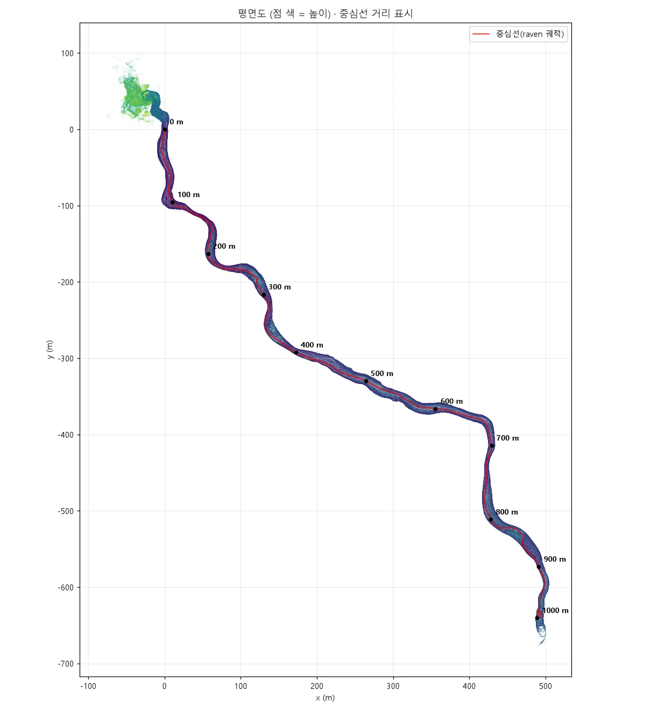
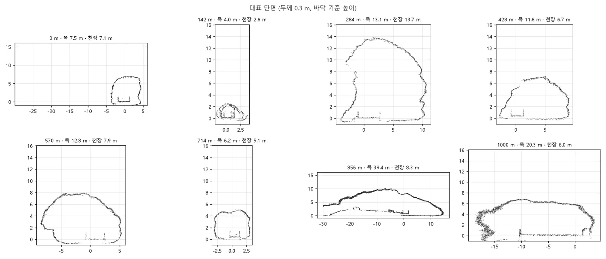
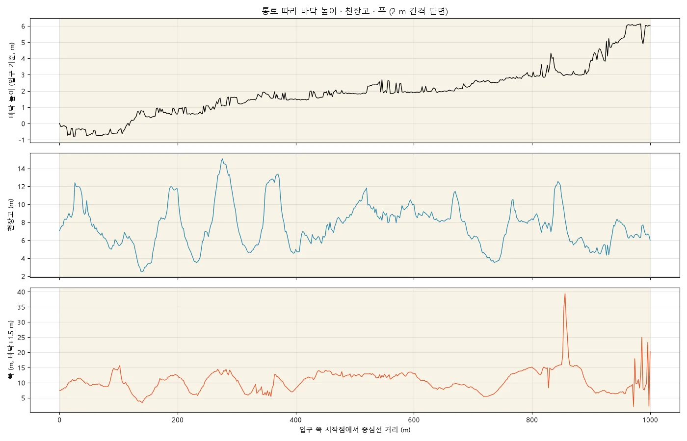

만장굴 입구에서 1,000 m 지점까지 왕복하며 스캔한 뒤, 입구 지상과 함께 하나의 좌표로 통합했습니다. 세 현장 중 유일하게 위경도·해발 표고를 붙여, 땅속 동굴을 위성지도 위에서 함께 볼 수 있습니다.
세션 4개 — 동굴 1 km 왕복, 동굴+입구 지상, 동굴 앞 350 m, 입구 지상 — 을 하나의 좌표로 통합했습니다.
| 세션 | 구분 | 시간 | 이동 거리 | 점 수 |
|---|---|---|---|---|
| 08-05 14:52 | 동굴 1 km 왕복 | 51 분 | 3,032 m | 7,854,344 |
| 09-02 13:37 | 동굴 + 입구 지상 | 61 분 | 4,035 m | 9,179,408 |
| 09-02 13:02 | 동굴 앞 350 m | 32 분 | 1,995 m | 4,668,858 |
| 08-05 14:42 | 입구 지상 | 7 분 | 354 m | 1,985,995 |
통로 길이 1,000 m · 체적(단면적×1 m) 62,815 m³ · 평면 면적 11,042 m². 모든 수치는 점군에서 직접 잰 값입니다.
| 항목 (1 m 간격 단면) | 중앙값 | 최소 | 최대 | 10~90 % |
|---|---|---|---|---|
| 폭 — 벽 사이 (바닥+1.5 m) | 10.37 m | 2.24 | 22.53 | 6.4~13.9 |
| 통행 폭 (가장 가까운 장애물) | 8.75 m | 1.00 | 19.30 | 3.0~12.7 |
| 천장고 (중앙) | 6.53 m | 2.29 | 14.35 | 3.9~9.9 |
| 단면적 | 60.5 m² | 4.1 | 195.8 | 20~106 |
| 지표→천장 깊이 (지형 기준) | 19.6 m | 8.9 | 30.4 | — |



3D 점군과 지도를 브라우저에서 돌려 보며, 단면 · 폭 · 천장고 · 단면적 · 체적을 위치 · 각도 · 길이 · 넓이까지 자유롭게 조절하며 직접 잴 수 있는 측정 페이지로 만들었습니다.
저용량 점군으로 몇 초 안에 열리고, 필요하면 [원본]으로 정밀하게 다시 잽니다. 자동 측정값은 사람·장비·난간에 영향을 받으니, 정확한 값은 '직접 재기'로 확인하세요.